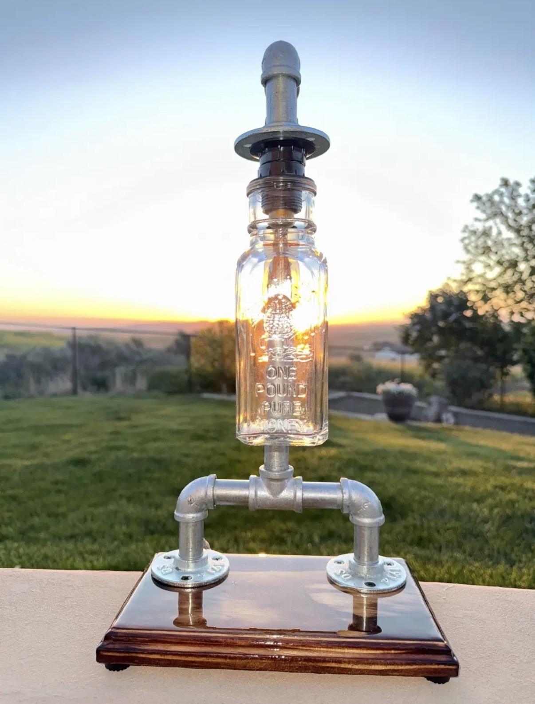
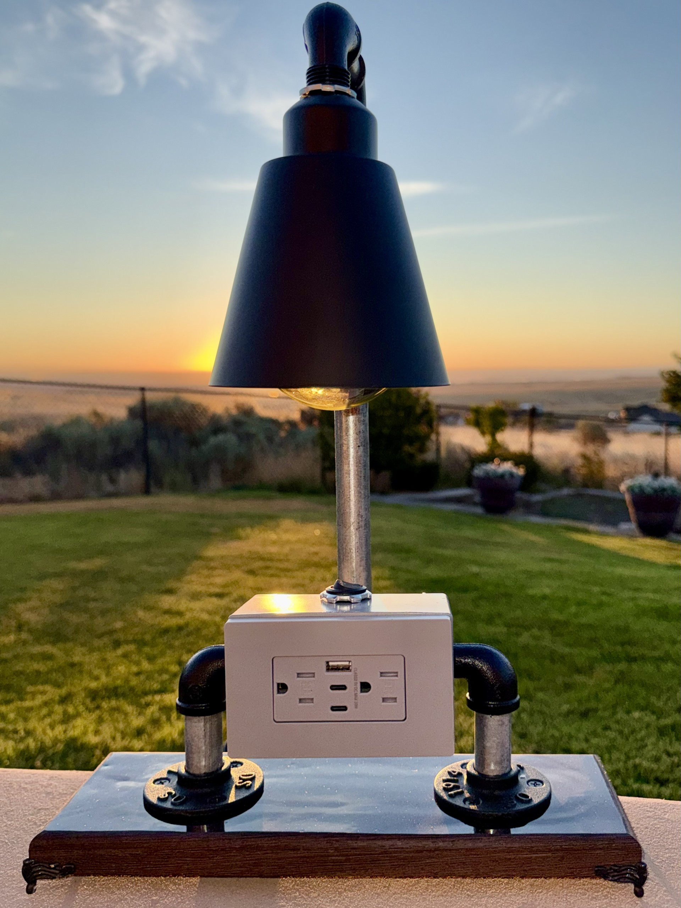
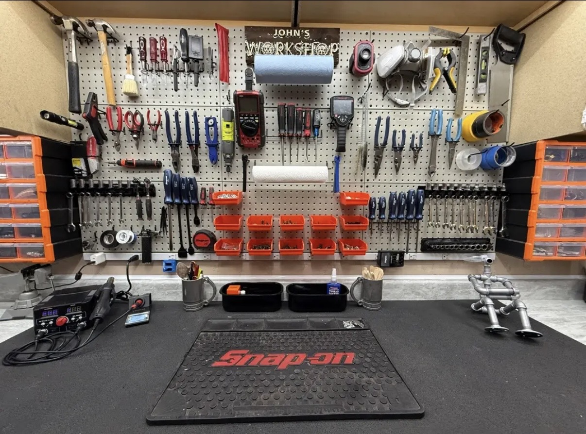
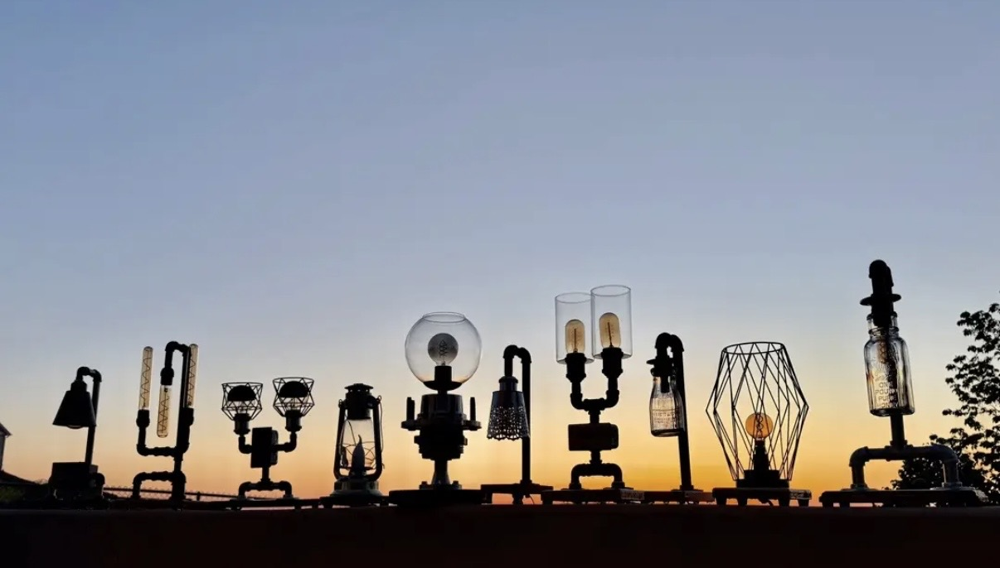

Around the World is handcrafted from a repurposed candle holder found at a second-hand store, giving the piece its globe-inspired character and vintage charm. It sits on a pine wood slab base with epoxy resin applied to the top, adding depth and protection while highlighting the natural wood grain. The lamp uses an E26 socket with a warm LED Edison bulb and a brown fabric cord with a black inline on/off switch. Every B4 Lighting lamp is individually handcrafted, making each one a unique piece of functional art.

Midnight Sentinels is a matching pair of handcrafted lamps made from 1/2” industrial pipe and fittings. Each lamp uses an E26 socket with a black-tipped 5000K bulb, creating a bold, modern glow against the dark industrial design. The arms move to create a unique look, allowing the pair to be posed and displayed in different ways. Each lamp includes a standard on/off paddle rocker switch with a matching cover plate. The bases are pine with black-tinted epoxy applied over the top, and small rubber feet are installed on the bottom to protect furniture and keep each piece stable. Every B4 Lighting lamp is individually handcrafted, making each one a unique piece of functional art.

Cherry Ember is a handcrafted pair of lamps made using 1/2” black painted industrial pipe with dark chrome E26 hanging sockets and warm white 2200K LED bulbs. The twisted black fabric cords hang naturally from the pipe design, giving each lamp a clean industrial look with a warm, inviting glow. The pair sits on pine wood bases finished with cherry-tinted epoxy applied to the top, creating a rich contrast between the wood, pipe, and cord. Rubber feet on the bottom help protect furniture and keep the lamps stable. Every B4 Lighting lamp is individually handcrafted, making each one a unique piece of functional art.

The Lineman is handcrafted by incorporating a vintage copper isolator with 1/2” industrial pipe, creating a piece that pays tribute to old electrical utility hardware and industrial craftsmanship. It uses a standard E26 socket with a 7 watt 2700K soft white gold-dipped bulb, surrounded by a glass bowl for a warm, finished look. The base is oak with epoxy applied to the top, highlighting the natural wood grain while protecting the surface. A traditional dual 3-prong black outlet with a matching matte finish cover adds everyday function to the piece. The back of the outlet box features a rotating knob to turn the light on and off. It is finished with a black grounded 3-prong cord and rubber feet on the bottom. Every B4 Lighting lamp is individually handcrafted, making each one a unique piece of functional art.

The Hanger is handcrafted using 1/2” black painted industrial pipe and fittings, creating a clean, minimalist design with a suspended hanging socket. It features a black E26 socket paired with a warm white 2700K smoky round Edison-style LED bulb for a soft, inviting glow. The twisted black fabric cord hangs naturally from the top of the frame, giving the lamp its distinctive appearance. The base is made from solid oak with stain applied to enhance the natural grain. A black inline on/off switch and black fabric cord complete the design, while rubber feet on the bottom help protect furniture and keep the lamp stable. Every B4 Lighting lamp is individually handcrafted, making each one a unique piece of functional art.

The Lockout is built around a repurposed front 4x4 hub from a Ford one-ton truck, giving the lamp a strong automotive identity and a mechanical centerpiece that can rotate when spun. The lamp is mounted on a repurposed floor lamp base and uses a 7 watt warm LED bulb for a soft glow. A white cord with an inline rocker switch keeps the design simple and functional. The bottom is finished with one piece of felt to help protect surfaces. Every B4 Lighting lamp is individually handcrafted, making each one a unique piece of functional art.

The Caretaker is handcrafted from 1/2” industrial pipe finished in a durable silver coating, giving it a clean industrial appearance. Its adjustable pipe arms can be repositioned to create different poses, making each display uniquely its own. A white rocker switch and grounded 3-prong outlet with a matching faceplate form the centerpiece of the design, blending everyday function with artistic creativity. Topping the lamp is a clear glass globe that surrounds a warm amber 2200K LED bulb, producing a soft, inviting glow. The lamp is mounted on a stained solid pine base that highlights the natural wood grain while providing a warm contrast to the industrial metalwork. A black grounded 3-prong power cord, rubber feet for furniture protection, and quality craftsmanship complete the piece. Every B4 Lighting lamp is individually handcrafted, making each one a one-of-a-kind piece of functional art.

Twin Beacons is handcrafted from 1/2” black painted industrial pipe and fittings, creating a clean industrial design with two matching lights. Each lamp is mounted on a wood base with a routed edge, adding a finished handcrafted detail to the design. The pair is built with warm Edison-style lighting and simple industrial hardware, giving the lamps a balanced mix of rustic wood and painted metal. Rubber feet on the bottom help protect furniture and keep each lamp stable. Every B4 Lighting lamp is individually handcrafted, making each one a unique piece of functional art.

The Dairyman is a sold one-of-a-kind lamp made using an old vintage milk jug as the shade. It was built with an E12 socket, hammered dark gray painted 1/2” pipe, and a warm 2700K LED bulb. The lamp included rubber feet on the bottom and a black cord with an inline rocker switch. Its rustic farm-inspired character made it a memorable piece in the B4 Lighting collection. Every B4 Lighting lamp is individually handcrafted, making each one a unique piece of functional art.

The Ember Cage began as a second-hand decorative light that originally used a battery-operated fairy light bulb. It was converted to an E12 socket and fitted with a 3 watt 2200K antique-style round LED bulb, creating a warm ember-like glow inside the cage. The cage was repainted black from its original gold finish, giving it a stronger industrial look. The base is pine that has been torch-burned and finished with epoxy applied over the top. A black cord with an inline rocker switch and rubber feet on the bottom complete the piece. Every B4 Lighting lamp is individually handcrafted, making each one a unique piece of functional art.

The Hive is handcrafted with a pine wood base that has been torch-burned and finished with epoxy for a warm rustic surface. The lamp uses painted silver 1/2” pipe and an old honey jar as the shade, giving the piece its distinctive character and name. It is fitted with an E12 socket and a 4 watt 2200K LED Edison bulb, producing a soft amber glow through the glass. Every B4 Lighting lamp is individually handcrafted, making each one a unique piece of functional art.

The Foundry is a handcrafted statement piece built on a wenge hardwood base that has been epoxied and then routered to leave a clean bare-wood and epoxy look. Victorian-style corner feet give the base a finished, elevated appearance. The lamp includes a gray dual 3-prong outlet that also houses a 30 watt, 3-port USB charger, adding everyday function to the artistic design. A rocker switch sits on top of the outlet box. The 1/2” pipework is a combination of black painted and natural pewter-toned pipe, creating an industrial contrast against the rich wood base. The shade has a black exterior with a white interior and is paired with an amber round 4 watt 2200K Edison-style bulb. A black grounded 3-prong cord completes the piece. Every B4 Lighting lamp is individually handcrafted, making each one a unique piece of functional art.

Twin Forge is built on the same style of handcrafted base as The Foundry, giving it a strong industrial foundation and a polished wood-and-epoxy look. This version uses rubber feet on the bottom for stability and surface protection. The lamp features mixed galvanized and black 1/2” pipe, chrome E26 sockets, and wire-design shades. The black twisted fabric cord pairs with a black paddle switch and matching gloss cover. Two 7 watt black-tipped 3000K LED bulbs provide a warm, modern glow. Every B4 Lighting lamp is individually handcrafted, making each one a unique piece of functional art.

Triple Helix is a sold handcrafted lamp built with three E26 sockets and a sculptural pipe design. It used two 6 watt and one 4.5 watt 2700K Edison tube-style bulbs for a warm layered glow. The base was epoxied and then routered for a finished edge, and Victorian-style feet added a classic detail to the industrial design. It was finished with black painted 1/2” pipe, a black cord, and an inline dimmer switch. Every B4 Lighting lamp is individually handcrafted, making each one a unique piece of functional art.

A look inside the B4 Lighting workbench, where ideas, reclaimed materials, pipe fittings, wood bases, and one-of-a-kind lamp builds come together. This workspace represents the hands-on process behind each finished piece, from layout and fitting to wiring, epoxy work, routing, and final assembly.

A final gallery view of several B4 Lighting lamps photographed together during sunrise. This showcase image captures the warmth, industrial character, and handcrafted style that tie the collection together.